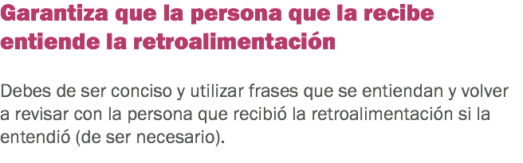
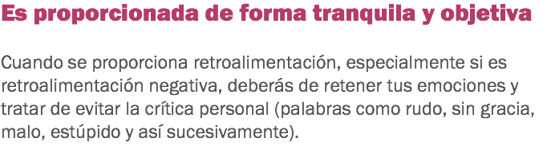

Motivar y retener al personal de hotelería

Ser un buen jefe


x





x

![Respeta al personal Respetar al personal implica: 1. Escuchar la opinión de tu personal, al final son ellos los que tratan día a día al cliente y pueden tener una óptica más clara de las cosas desde su punto de vista. 2. Dar «gracias» al personal cuando ellos han hecho las cosas de forma correcta. El comportamiento que es alabado, será repetido. 3. Considerar al personal como personas con motivaciones, gustos y aversiones, emociones, obligaciones familiares y necesidades personales; si consideras al personal nada más como ayuda pagada, podríamos llegar a pensar que lo único que necesitamos hacer, es darles una paga justa. Es obvio que hay más en el trabajo que simplemente ganar dinero. Puedes solicitarles al personal que dejen sus vidas emocionales en la puerta al momento de entrar a trabajar, pero el cerrarse completamente a nuestras necesidades personales, va en contra de la naturaleza humana. Trata de conocer a tu personal como individuos, con las diferencias de unos y de otros, de manera que puedas encontrar la mejor forma posible para tratar a cada persona.](images/u1445-35.png)
![Para construir una base de datos de la persona: 1. Recopila información del personal que está disponible:
• ¿Cuáles son los talentos especiales que estos tienen? • ¿Cuáles son sus intereses? • ¿Cuáles son los logros excepcionales que tienen? • ¿Cuáles son aquellos logros excepcionales? • ¿Cuáles son sus películas, canciones, deportes y pasatiempos favoritos? • ¿Quién es un piloto? • ¿Quién colecciona muñecas de porcelana? • ¿Quién es un comediante? Este tipo de información se convierte en una forma fantástica de crear una red de trabajo a nivel interno, así como en una continua forma de construcción de la moral y el orgullo. 2. Nombra un equipo de trabajo que organice y construya la información para formar una herramienta de redes de trabajo y un valioso recurso de la compañía. ¿Quién sabe lo que podría llegar a desarrollarse? Tal vez algunos de los empleados se unan para dar clases de cerámica o cocina después de las horas laborales, apoyar a distintos grupos, clubes de viajeros, grupos de buceo o incluso formar un coro o banda musical de la compañía. A medida que vayas construyendo las bases de datos, irás descubriendo recursos invaluables que han permanecido cubiertos en su departamento. Y lo mejor de todo, es que todo tu personal sentirá que los valoras y te preocupas por ellos como individuos, no solamente como empleados.](images/u1480-39.png)
x

![Dedícate a tu trabajo y haz que tu entusiasmo sea contagioso. Antes de motivar al personal, el gerente debe de motivarse él mismo. Muéstrale al personal que si tú actúas de forma entusiasta, tú estarás entusiasmado. Predica con el ejemplo. Si tú le pides al personal que le sonrían a los huéspedes, tú también deberás de sonreírle a los huéspedes y al personal. Mantén altas metas de desempeño. Si lo que tú quieres es un alto desempeño, entonces deberás de mantener un alto desempeño. Haz que tu personal te admire. El personal quiere aprender de su gerente, así que sé cuidadoso de practicar lo que tu predicas, si es que deseas mantener la credibilidad.](images/u1485-18.png)
Haz clic en Regresar para volver al inicio.